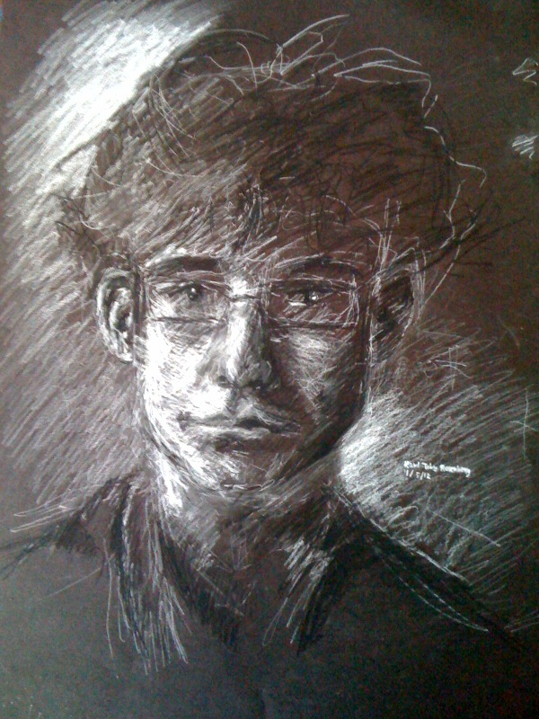

Karl Toby Rosenberg
Human-Computer Interaction Researcher and
Assistant Clinical/Teaching Professor at New York University
Contact: karltobyrosenberg [-at-] nyu [-dot-] edu
CV
Main Portfolio Piece "DrawTalking: Building Interactive Worlds by Sketching and Speaking"
LinkedIn
Projects
Teaching
GitHub